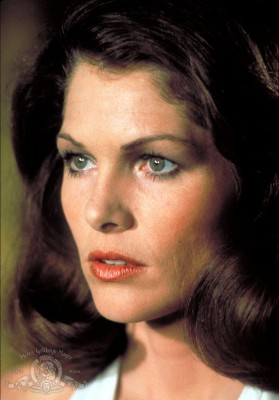

#12175 Bis ans Ende der Welt
Alternativ: Until the End of the World (Englischer Titel)

 IMDB-Wertung: 6.7 / 10
IMDB-Wertung: 6.7 / 10  Metascore: 63
Metascore: 63 
‘Bis ans Ende der Welt’ ist für Wim Wenders ‘das ultimative Road Movie, eine Reise um den Globus, eine Odyssee der Gegenwart’. In Wenders' moderner Lesart ist Odysseus heute ein junger Mann, Sam, der im Auftrag seines Vaters unterwegs ist, um Bilder aus dem Leben seiner blinden Mutter aufzuzeichnen. Denn sein Vater will diese Bilder wieder ins Sehzentrum seiner Frau implementieren. In dem 1990 entstandenen Film behandelt Wim Wenders ein Thema, das ihn in diesen Jahren umtrieb: der Verlust authentischer Bilder. ‘Am Anfang war das Wort. Was wäre, wenn am Ende nur das Bild übrig bliebe!?’
Jahr: 1991
Dauer: 132 Minuten
FSK: 12
Land: Deutschland Studio: TobisTonspuren: DTS - ,
Untertitel: Deutsch,
Auflösung: 1080p (1792x1080) Größe: 12288 MB
Genre: Action, Thriller, Drama, Sci-Fi
Regisseur:  Wim Wenders
Wim Wenders
Drehbuch: Peter Carey, Wim Wenders, Solveig Dommartin, Michael Almereyda
Soundtrack: Graeme Revell
Darsteller:
- Solveig Dommartin als Claire Tourneur
- Eddy Mitchell als Raymond Monnet
 William Hurt als Sam Farber, alias Trevor McPhee
William Hurt als Sam Farber, alias Trevor McPhee- Adelle Lutz als Makiko
- Ernie Dingo als Burt
 Sam Neill als Eugene Fitzpatrick
Sam Neill als Eugene Fitzpatrick Rüdiger Vogler als Phillip Winter
Rüdiger Vogler als Phillip Winter- Amália Rodrigues als Frau in Strassenbahn
 Naoto Takenaka als Hotelwätcher
Naoto Takenaka als Hotelwätcher- Kuniko Miyake als Mrs. Mori
- Chishû Ryû als Mr. Mori
 Allen Garfield als Gebrauchtwagenhändler
Allen Garfield als Gebrauchtwagenhändler-  Lois Chiles als Elsa Farber
 David Gulpilil als David
David Gulpilil als David- Alfred Lynch als Der alte Alfred
 Jeanne Moreau als Edith Farber
Jeanne Moreau als Edith Farber Max von Sydow als Henry Farber
Max von Sydow als Henry Farber- Carmen Chaplin als
- Dolores Chaplin als
- Michael Winters als
- David Byrne als Himself in music video (uncredited)
- Tom Farrell als Madman in Bar (uncredited)
- Patrícia Tavares als (uncredited)
 Tom Waits als Singer in Bar (uncredited)
Tom Waits als Singer in Bar (uncredited)- Pietro Falcone als Mario
- Enzo Turrin als Arzt
- Chick Ortega als Chico Rémy
- Jean-Charles Dumay als Automechaniker
- Ernest Berk als Anton Farber
- Christine Oesterlein als Irina Farber
- Diogo Dória als Hotelportier
- Elena Prudnikova als Krasikova
- Jinzhan Zhang als LKW-Fahrer
- Hiroshi Kanbe als Hotelgast
- Yugi Ogata als Hotelgast
- Miwako Fujitani als Zimmermädchen
- Alec Jason als Drogenpolizist
- Lauren Graham als Heidi
- Fred Welsh als Polizist
- Charlie McMahon als Buzzer
- Justine Saunders als Maisie
- Kylie Belling als Lydia
- Bart Willoughby als Ned
- Jimmy Little als Peter
- Rhoda Roberts als Ronda
- Paul Livingston als Karl
- Susan Leith als Nora Oliveira
- Detlef Winterberg als Kosmonaut
- Jean-Marie Rase als
- Sylvette Dommartin als
Datei: X:\1991\Bis ans Ende der Welt (1991, FSK12, 1792x1080).mkv seit 30.12.2019
Festplatte: Gemischt-01+Anime
 Es gibt insgesamt 53 Filme in der Gruppe '1991'
Es gibt insgesamt 53 Filme in der Gruppe '1991'